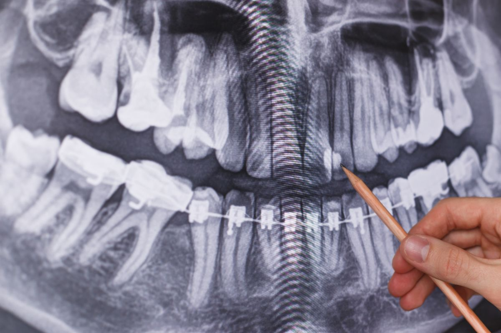
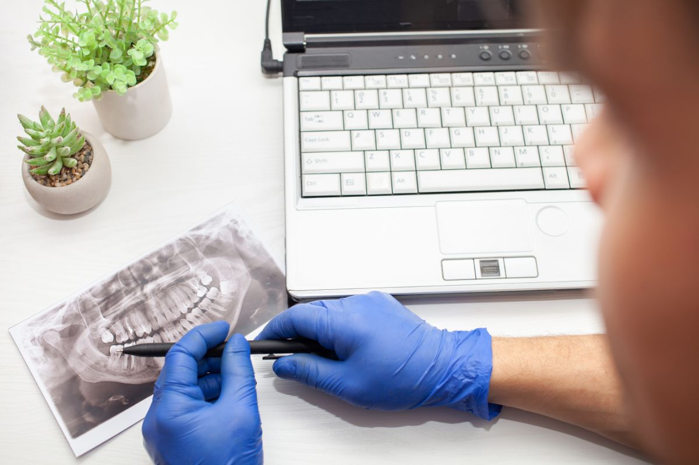
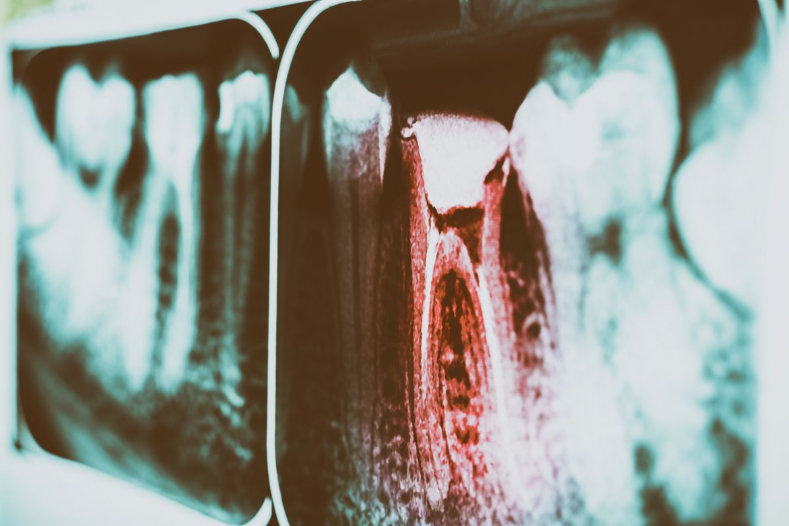

What it measures
Bone height and bone width, the position of the nerve canal, root anatomy from any angle, and the relationship between a planned implant and the structures around it. Measured rather than estimated, which is the entire point.

Digital radiography and 3D CBCT scanning
Low dose digital radiography and 3D CBCT imaging, used to answer a clinical question.
Nine stages, and the one that costs this practice money is stage 03.
Radiography is easy to sell and impossible for a patient to check, so the policy on when an image is declined is written here in the sequence rather than left unsaid.
Next
Stage 01, what a digital sensor replaced and what that swap actually bought, which is less than the marketing says and more than most patients realise.
Digital radiography replaces the film that once had to be developed in a darkroom with an electronic sensor.
The picture appears on screen within seconds. Contrast and magnification can be adjusted while you are still sitting in the chair, so a feature that is ambiguous at one setting can be looked at again at another without exposing you a second time.
The exposure needed is a fraction of what film required. Nothing is developed, so nothing is lost to a processing error, and the file is stored in your record and can be sent on to another practice if you ask.
That is the whole of the change, and it is worth saying plainly because the word digital is used to sell a great deal that it does not actually deliver.

Lower dose is not no dose. Digital sensors need a fraction of the exposure film required, and that fraction is still an exposure. It is the reason the rest of this page is about deciding whether an image is warranted rather than about how impressive the equipment is.
Next
Stage 02, the four flat projections and the specific question each one is taken to answer.
Each of the four is taken to answer a different question, and none of them is a general purpose look around.

What all four of them share
Periapical
One or two teeth from the crown all the way down past the end of the root. It is what a clinician looks at for an abscess, a suspected fracture, or the working length of a canal.
One tooth, full depthBitewing
The contact points between the back teeth, which is where decay begins out of sight and where no examination and no mirror will find it early.
Between the back teethPanoramic
Both jaws, the sinuses and the joints flattened into a single view. Used for wisdom teeth, for growth assessment, and as a general overview when the question is broad rather than local.
Both jaws, one viewLateral cephalogram
The profile of the skull in one plane, showing the skeletal relationship between the jaws. It exists for orthodontic planning and is taken for very little else.
Profile, for orthodonticsNext
Stage 03, the band this practice would rather you read than skip: the circumstances in which no image is taken at all.
Radiography here is prescribed on clinical need. Never by routine, and never simply because you asked.
If nothing in the examination raises a question an image would answer, no image is taken and nothing is charged for one. That is the whole rule and there is no version of it that flexes on a quiet afternoon.
CBCT specifically is not a default upgrade. It delivers a higher dose than a single conventional projection, so it is used where the extra information changes the treatment, and not because the machine is standing in the room.
The reason this is written down is that you cannot audit it from the chair. A patient has no way of knowing whether the image they were charged for was the image they needed, so the standard has to be published and then kept.
Say these things before anything is switched on
No dose figure, comparison to a flight, or safety percentage appears on this page. Such comparisons are common in dental marketing, and this practice has not published one with a source attached, so none appears here. What is stated instead is the rule that governs when an exposure happens at all.
Next
Stage 04, the instrument that captures a volume instead of a picture, and the one thing about it that is genuinely a receipted fact.
3D CBCT imaging captures a volume, not a photograph, so the anatomy can be turned, sliced and measured rather than only looked at.
It is available at all four clinics: Mitsukoshi BGC, Shangri-La Plaza, Bonifacio Stopover BGC and Alabang Town Center. Having it in each of them is the difference between planning your case in the building where you are treated and being sent across the city to an imaging centre and back with a disc.

What it measures
Bone height and bone width, the position of the nerve canal, root anatomy from any angle, and the relationship between a planned implant and the structures around it. Measured rather than estimated, which is the entire point.
iTero intraoral scanner
Not radiography at all. It records the surface of the teeth and gums optically, with no radiation, and produces the digital model used for aligners, crowns, bridges and dentures. It is often aligned with a cone beam volume so the surface and the bone sit in one plan.
RayFace facial scanner
Also not radiography. It records the proportions of your face in three dimensions, so a plan can be built against your own facial reference points rather than against a set of teeth considered in isolation.
Next
Stage 05, what the appointment is actually like, in six steps, most of which are over in seconds.
Most conventional imaging happens inside the consultation you have already booked.
A cone beam scan is usually done at the same visit as well, and the interpretation is reviewed with you before you leave the building rather than telephoned to you afterwards.
Next
Stage 06, why this section of the site sits underneath every discipline instead of belonging to one of them.
Imaging is not the property of one discipline, which is why radiography has a section of this site to itself.
An endodontist reads a periapical projection for canal anatomy. A periodontist reads the same technology for bone level. An orthodontist reads a cephalogram for skeletal relationship. An implant case is planned on a CBCT volume. One instrument, four different questions, four different specialists.
Images are taken by trained clinical staff and interpreted by the specialist responsible for your treatment. The practical consequence is that the scan and the person who acts on it are in the same building, so there is no external imaging centre in the loop and no second trip to have anything read.

Next
Stage 07, why imaging is billed separately rather than buried inside a treatment fee where you cannot see it.
Anchored to published Philippine market ranges. No treatment price from this practice exists yet.
Imaging is quoted as its own line on your plan rather than folded into a treatment price, so you can see what it was and decide about it separately. The figure is confirmed in writing once the clinician has decided which images your case actually needs.
How you pay
Elevate Dental does not accept HMO or dental insurance. All treatment is self-pay.
HMO coverage cannot be used for dental treatments at our clinics. It is stated in the stage where money is discussed, because discovering it later is worse than reading it now.
Elevate has not published a price for this examination, so every peso amount on this page is drawn from published Philippine market ranges rather than quoted by this practice. What your own imaging costs is confirmed to you in writing at the free consultation, before anything is taken. Confirm current consultation terms with the clinic before you book.
| Image | What it answers | Where it sits |
|---|---|---|
| A single periapical | One tooth, root and all. An abscess, a fracture, a canal length. | Lowest |
| A set of bitewings | Decay starting between the back teeth, on both sides. | Low |
| A panoramic | Both jaws, the sinuses and the joints, as an overview. | Middle |
| A cephalogram | The skeletal relationship between the jaws, for orthodontics. | Middle |
| A CBCT scan | A measurable volume, for surgery, implants and difficult anatomy. | Highest |
Three other things move the figure
Which images your case needs is a clinical decision, so the figure follows the examination rather than the other way round.
Next
Stage 08, what you actually walk out with, which on this service is not a before and an after.
There is no after picture on this service. What you get is a finding, an explanation, and a decision you are part of.
You see the image on the monitor at the same appointment, at a size you can actually read, with the clinician pointing at the specific feature that answers the question: a dark shadow between two molars, a widened space at the end of a root, the bone level sitting against a root surface, the position of a nerve canal relative to a planned implant.
Then it is stored, and that is where most of the value is. The next image is compared against this one rather than read in isolation, which is how a change that is too small to see in one picture becomes obvious across two. It only works if the files are kept and matched, so they are.
If you want a copy, ask. These are your records and they are released in a standard format on request, to you or to anybody you nominate.

Every radiographic frame on this page is a library image supplied by the practice, and is captioned as one.
Next
Stage 09, the last one: eight answers grouped by whether the exposure has happened yet, and the shortest aftercare section on this site.
Three to raise before the machine is switched on, and five you can ask whenever you like.
Aftercare
There is none, and that is the whole section. No recovery, no anaesthetic, no restriction. You can eat, drive and go back to work the moment you walk out.
If you have had images taken elsewhere in the last two years, bring them or ask that clinic to send them. They will be used rather than repeated.
Raise these before the exposure
Dental images use a small dose, and digital sensors need a fraction of the exposure film required. That does not make the dose zero, which is exactly why each one is prescribed to a clinical question rather than taken as a matter of course. Tell us about recent imaging elsewhere so nothing is repeated needlessly.
Tell us before anything is taken. Elective imaging is deferred until after the pregnancy. Where something is genuinely necessary, to diagnose an infection for instance, it is discussed with you first and taken with appropriate shielding.
There is no fixed interval that applies to everybody. It follows your decay risk, your gum condition, your age and what treatment is planned. Some patients need bitewings every year or two and others much less often. Your clinician will tell you the interval that applies to you, and why it is that one.
Ask these whenever you like
No. The sensor for a periapical or bitewing sits against the inside of the mouth and can feel awkward for a few seconds, particularly at the very back. Say so if it is uncomfortable, because the holder can be repositioned. A panoramic image and a volume capture involve nothing touching you at all.
A panoramic is a single flattened picture of both jaws, useful as an overview. The volume is captured in three dimensions instead, so it can be examined slice by slice from any direction and measured accurately. The overview answers a general question. The volume answers a surgical one.
Yes. Ask at the appointment or afterwards, and they are released in a standard format you can take to another clinician or simply keep. They are your records.
For implant planning a three dimensional volume is what makes an accurate plan possible, because bone height, bone width and the position of the nerve canal have to be measured rather than estimated. Your surgeon will confirm what your case needs at the assessment.
All four Metro Manila clinics carry CBCT scanning, which is the one capability confirmed across every branch. Which of them schedule which appointment types, and on which days, is still being confirmed with the practice, so book through the appointment control and you will be placed at the branch that can take your case.
Outcome
The route ends here on purpose. Nine stages, all of them read: the sensor, the four projections, the policy on declining, the volume, the appointment, the readers, the money, the finding, and the answers.